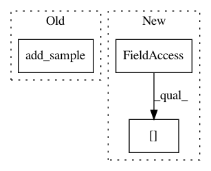

abb4e425ff57acad92d42e92a6c76526a3b49e27,softlearning/samplers/simple_sampler.py,SimpleSampler,sample,#SimpleSampler#,19
Before Change
self._infos.append(info)
self._total_samples += 1
self.pool.add_sample(
observations=self._current_observation,
actions=action,
rewards=reward,
terminals=terminal,
next_observations=next_observation)
if terminal or self._path_length >= self._max_path_length:
last_path = self.pool.last_n_batch(
self._path_length,
After Change
self._total_samples += 1
self._current_path["observations"].append(self._current_observation)
self._current_path["actions"].append(action)
self._current_path["rewards"].append([reward])
self._current_path["terminals"].append([terminal])
self._current_path["next_observations"].append(next_observation)
In pattern: SUPERPATTERN
Frequency: 3
Non-data size: 3
Instances
Project Name: rail-berkeley/softlearning
Commit Name: abb4e425ff57acad92d42e92a6c76526a3b49e27
Time: 2019-02-04
Author: hartikainen@berkeley.edu
File Name: softlearning/samplers/simple_sampler.py
Class Name: SimpleSampler
Method Name: sample
Project Name: rail-berkeley/softlearning
Commit Name: 39784035924760e69ec50ab6ab29c8666a595eec
Time: 2018-08-22
Author: kristian.hartikainen@gmail.com
File Name: softlearning/replay_pools/replay_pool.py
Class Name: ReplayPool
Method Name: add_path
Project Name: rail-berkeley/softlearning
Commit Name: 74ff03f3c373703439c3ed6bada477812f25bc96
Time: 2018-08-23
Author: kristian.hartikainen@gmail.com
File Name: softlearning/replay_pools/replay_pool.py
Class Name: ReplayPool
Method Name: add_path